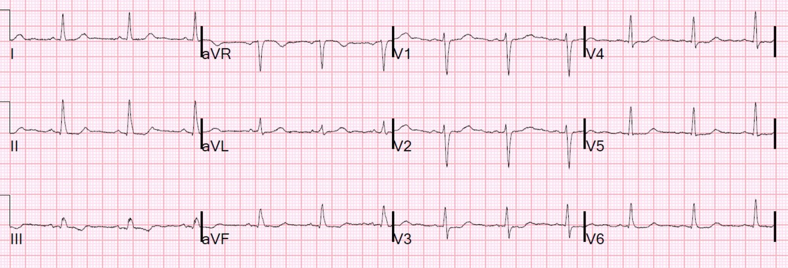
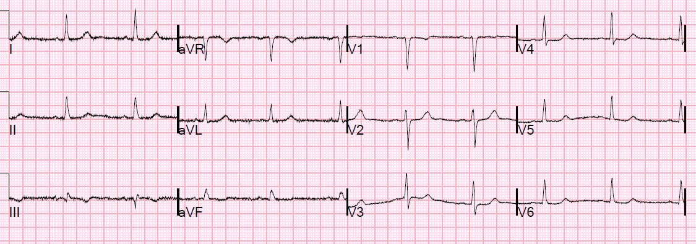
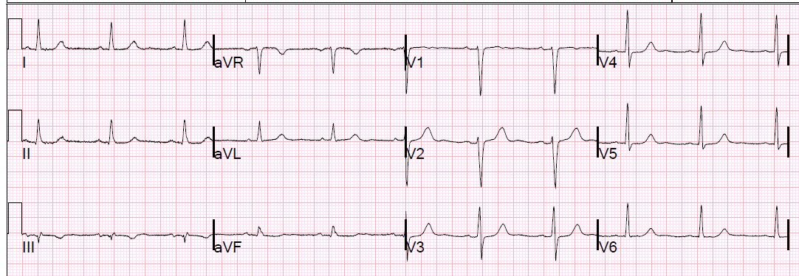
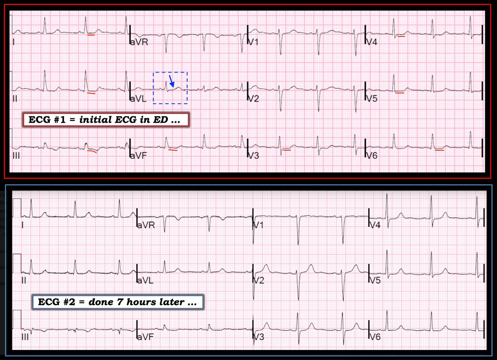

24/12/2018 — Đau ngực khi gắng sức từng cơn, tăng dần và các lần troponin liên tiếp âm tính
Bản dịch tiếng Việt của bài "Intermittent increasing exertional chest pain and serial negative troponins" – Dr. Smith’s ECG Blog. Giữ nguyên toàn bộ 6 hình ảnh của bản gốc.
Tôi được cho xem điện tâm đồ này ở khu phân loại (triage), ghi trên một bệnh nhân có lý do chính đến khám là đau ngực, tại nơi tôi đang làm việc:


Suy nghĩ ngay lập tức của tôi, và cũng là chẩn đoán tôi ghi vào phần đọc chính thức, là: “Điện tâm đồ có hình ảnh thiếu máu cục bộ, lo ngại hội chứng vành cấp (ACS).”
Tại sao tôi nghĩ như vậy? Có sóng T đảo ngược bất thường ở chuyển đạo III và một ít ST chênh xuống ở V3-V6, cùng đoạn ST dốc xuống ở V2.
Sau đó tôi đến nói chuyện với bệnh nhân:
Người phụ nữ 40 mấy tuổi này, không có tiền sử bệnh lý hay yếu tố nguy cơ nào, đến khu phân loại nơi tôi đang làm việc, kể rằng bà có những cơn đau ngực sau xương ức ngắn khi gắng sức, bắt đầu từ 2 tuần trước. Cơn gần nhất xảy ra ngay trước khi đến viện và bà không có triệu chứng khi đến. Tổng cộng đã có khoảng 6 cơn, không cơn nào kéo dài quá 15 phút. Cơn gần nhất là ngay trước khi đến viện. Bà mô tả đau ngực giữa xương ức, không lan, kiểu đè nặng, kèm khó thở và vã mồ hôi. Triệu chứng hết khá nhanh khi nghỉ. Triệu chứng chưa bao giờ xảy ra lúc nghỉ. Trước khi có các triệu chứng này, bà là người khá năng động, dung nạp gắng sức tốt và không có triệu chứng khi gắng sức.
Bệnh nhân không còn đau ngực trong thời gian ở khoa cấp cứu (ED).
3 lần xét nghiệm troponin, mỗi lần cách nhau 2 giờ, đều dưới giới hạn phát hiện.
Một điện tâm đồ ghi lại được thực hiện 7 giờ sau đó.


Thang điểm HEART = 3
Bệnh sử: 2
Điện tâm đồ: hầu hết mọi người sẽ cho 1 điểm, nhưng nếu bạn thật sự hiểu điện tâm đồ, thì bản ghi này là thiếu máu cục bộ cho đến khi chứng minh được điều ngược lại.
Tuổi: 0
Yếu tố nguy cơ: 0
Xét nghiệm troponin: 0
Điểm số này cho thấy vì sao việc hỏi bệnh sử cẩn thận và đọc điện tâm đồ cẩn thận là cực kỳ quan trọng:
Thứ nhất, cơn đau đến rồi đi và không kéo dài thường quá ngắn để làm troponin dương tính. Do đó, việc troponin không dương tính không đặc biệt khiến ta yên tâm.
Tôi lo ngại nhiều hơn hẳn về cơn đau có tính động (dynamic) so với cơn đau liên tục, vì hai lý do:
1) nó điển hình cho đau thắt ngực hơn nhiều và
2) troponin rất thường âm tính.
Thứ hai: Điện tâm đồ còn xa mới bình thường và thực sự trông có hình ảnh thiếu máu cục bộ.
Nếu được điều chỉnh thang điểm HEART, tôi sẽ cho 3 hoặc 4 điểm chỉ riêng cho bệnh sử! Tôi sẽ cho 2 điểm cho điện tâm đồ. Như vậy sẽ là 5 hoặc 6.
Với bệnh sử này và 2 điện tâm đồ này, không còn nghi ngờ gì về hội chứng vành cấp, trong trường hợp này là “Đau thắt ngực không ổn định” vì troponin đều âm tính.
Có chỉ định chụp mạch vành.
Bác sĩ nhận bệnh nhân nhập viện lo ngại về “Đau thắt ngực ổn định.” Tuy nhiên, vì tình trạng này mới xuất hiện và nặng lên với mức hoạt động ngày càng ít hơn, đây là đau thắt ngực không ổn định.
Thay vì chụp mạch vành, họ đã chỉ định siêu âm tim gắng sức, bắt đầu bằng siêu âm tim lúc nghỉ.
Kết quả siêu âm tim gắng sức
1. Rối loạn vận động thành khu trú – vô động thành dưới từ đoạn đáy đến đoạn giữa lúc nghỉ, không thay đổi khi gắng sức.
2. Rối loạn vận động thành khu trú – giảm động vách mỏm, vùng trước vách đoạn giữa, và thành trước từ đoạn giữa đến mỏm khi gắng sức.
3. Chức năng thất trái bình thường lúc nghỉ, không thay đổi khi gắng sức.
4. Đáp ứng điện tâm đồ kiểu thiếu máu cục bộ với tần số tim đạt yêu cầu.
5. Bệnh nhân có báo đau thắt ngực khi gắng sức.
6. Khả năng gắng sức kém (40% so với dự đoán theo tuổi và giới).
Vì vậy bệnh nhân đã được chụp mạch vành:
Hội chứng vành cấp – Đau thắt ngực không ổn định .
Thủ phạm là chỗ hẹp 95% ở RCA đoạn xa.
Tổn thương đã được đặt stent.
Điện tâm đồ sau PCI:


Những điểm cần học:
1. Điện tâm đồ vẫn thiết yếu cho chẩn đoán hội chứng vành cấp. Ngay cả với troponin độ nhạy cao, rất nhiều trường hợp hội chứng vành cấp bị bỏ sót nếu phớt lờ điện tâm đồ.
2. Ở bệnh nhân có troponin bình thường, đau ngực từng cơn đáng lo ngại hơn nhiều so với đau ngực liên tục
3. Đau thắt ngực tăng dần (crescendo angina) ngày càng nặng hơn, ngay cả khi xảy ra lúc gắng sức, là không ổn định, chứ không phải ổn định

———————————————————–
Bình luận của KEN GRAUER, MD (24/12/2018):
———————————————————–
Một ví dụ xuất sắc của Dr. Smith về một kiểu hình thiếu máu cục bộ ít rõ ràng hơn — và về lợi ích của các bản ghi liên tiếp trong việc xác nhận các dấu hiệu trên điện tâm đồ ban đầu. Để cho rõ — tôi đã đặt 2 điện tâm đồ đầu tiên ghi trên bệnh nhân này cạnh nhau trong Hình 1.


===================================
Tôi xin nhấn mạnh thêm các điểm quan trọng sau đây mà Dr. Smith đã nêu:
- Mặc dù bệnh nhân nữ này tương đối trẻ (40 tuổi) và không có yếu tố nguy cơ tim mạch — bệnh sử lâm sàng là kinh điển cho cơn đau thắt ngực: Bệnh nhân mô tả những cơn đau ngực giữa xương ức ngắn (≤15 phút) mới khởi phát, khởi phát do gắng sức, và đỡ nhanh khi nghỉ.
- Như Dr. Smith đã nói — bệnh nhân này không chỉ đã cho chúng ta biết rằng bà bị đau thắt ngực — mà bà còn cho chúng ta biết rằng bà bị đau thắt ngực không ổn định bởi vì: i) Trước 2 tuần vừa qua — bà vẫn năng động, dung nạp gắng sức tốt và không có triệu chứng khi gắng sức; và, ii) Các cơn đau của bà khởi phát với mức gắng sức nhẹ dần. Với bệnh sử như vậy — gánh nặng chứng minh thuộc về chúng ta: phải loại trừ (chứ không phải khẳng định) bệnh động mạch vành đáng kể!
Như Dr. Smith đã nói — Điện tâm đồ #1 ( = điện tâm đồ ban đầu ghi tại khoa cấp cứu) rõ ràng là bất thường (Hình 1). Nhằm tinh chỉnh việc đánh giá điện tâm đồ ban đầu này — tôi ghi nhận các dấu hiệu sau:
- ST chênh xuống nhẹ ở một số chuyển đạo.
- ST dẹt (thẳng đuỗn) ở nhiều chuyển đạo — mà tôi đã làm nổi bật bằng các đường ngắn, thẳng màu ĐỎ trong Hình 1.
- Sóng T đảo ngược nông đơn độc ở chuyển đạo III tự nó không nhất thiết là bất thường — nhưng nó là bất thường trong bối cảnh có những bất thường tinh tế ở mỗi chuyển đạo trong 3 chuyển đạo thành dưới. Cụ thể, có ST thẳng đuỗn và hơi dốc xuống ở chuyển đạo II và aVF — và ST hơi dạng vòm (coving) ở chuyển đạo III dẫn vào sóng T đảo ngược ở chuyển đạo này.
- LƯU Ý: Để so sánh — ST-T ở chuyển đạo aVL trong hình chữ nhật chấm XANH là bình thường. Phần đoạn ST thẳng ngắn hơn nhiều ở phức bộ này trong aVL — và, sự chuyển tiếp từ đoạn ST sang khởi đầu sóng T từ từ hơn nhiều, với đường dốc lên mượt mà (mũi tên XANH). Hẳn là rõ ràng rằng ST-T ở tất cả các chuyển đạo có đường ĐỎ trông rất khác (với đoạn ST thẳng dài hơn và khởi đầu sóng T đột ngột hơn).
===================================
Những dấu hiệu trên Điện tâm đồ này Có ý nghĩa Gì?
Tôi mô tả các dấu hiệu nêu trên ở điện tâm đồ #1 là “bất thường sóng ST-T không đặc hiệu”. Lý do chúng được gọi là “không đặc hiệu” — là vì rất nhiều tình trạng (nhiều tình trạng trong số đó không phải do tim, như tăng thông khí; nhiệt độ quá cao hoặc quá thấp; “bệnh nhân đang bệnh nặng”; sợ hãi hoặc đau; rối loạn điện giải, v.v.) có thể tạo ra các dấu hiệu điện tâm đồ tương tự như những gì thấy ở điện tâm đồ #1.
- Tuy nhiên, trong bối cảnh bệnh sử kinh điển của đau thắt ngực (đúng như trường hợp của bệnh nhân này! ) — các dấu hiệu điện tâm đồ này nên được diễn giải là thiếu máu cục bộ cho đến khi chứng minh được điều ngược lại!
===================================
Điện tâm đồ #2 ghi 7 giờ sau đó) cũng rõ ràng là bất thường:
- Như Dr. Smith đã nói — ST chênh xuống ở điện tâm đồ #2 ít hơn so với điện tâm đồ #1.
- So Sánh Từng Chuyển đạo giữa điện tâm đồ #1 và điện tâm đồ #2 cho thấy thêm một dấu hiệu rất quan trọng. Lưu ý rằng dù tăng tiến sóng R và hình thái QRS ở các chuyển đạo ngực chỉ thay đổi rất ít — biên độ sóng T ở các chuyển đạo từ V2 đến V6 rõ ràng đã tăng ở điện tâm đồ #2. Điều này khẳng định đã có thay đổi sóng ST-T động (dynamic) trên điện tâm đồ thứ 2 này, ghi 7 giờ sau đó, khi đau ngực đã hết hoàn toàn.
- Lưu ý rằng tình trạng ST-T thẳng đuỗn không đặc hiệu vẫn tồn tại ở nhiều chuyển đạo trên điện tâm đồ #2.
===================================
Những điểm CHÍNH:
- Đúng là troponin bất thường có thể giúp chẩn đoán nhanh hơn — nhưng việc các lần troponin liên tiếp đều âm tính trong ca này hoàn toàn không có gì bất ngờ. Bệnh nhân này bị đau ngực kiểu đau thắt ngực — nhưng không bị nhồi máu cơ tim.
- Siêu âm tim gắng sức lẽ ra không cần phải làm. Mặc dù xét nghiệm này hóa ra bất thường rõ rệt — một chẩn đoán xác định đã hiển nhiên từ trước (và đã được Dr. Smith đưa ra). Việc bệnh nhân này có bệnh sử kinh điển của đau thắt ngực không ổn định + điện tâm đồ ban đầu bất thường + thay đổi ST-T động trên điện tâm đồ thứ 2 sau khi đau ngực đã hết — là xác định chẩn đoán bệnh động mạch vành cấp cho đến khi được chứng minh ngược lại bằng kết quả thông tim âm tính.
- ĐIỂM THEN CHỐT (PEARL): Nếu kết quả của một xét nghiệm lâm sàng bạn sắp chỉ định sẽ không thay đổi cách xử trí của bạn — thì có lẽ bạn không cần chỉ định xét nghiệm đó! Siêu âm tim gắng sức có thể cho kết quả âm tính giả. Dù thế nào cũng sẽ cần thông tim. Tôi hiểu rằng bác sĩ nhận bệnh nhân nhập viện “muốn chắc chắn” — nhưng thực tế là, tất cả những gì siêu âm tim gắng sức làm được trong ca này là trì hoãn thông tim mạch vành trong khi làm tăng chi phí điều trị.
- Điều quan trọng là phải giỏi nhận ra các dấu hiệu điện tâm đồ tinh tế như ST-T thẳng đuỗn (dẹt) không đặc hiệu, như được làm nổi bật bằng các đường ĐỎ ở điện tâm đồ #1. Nhiều bác sĩ lâm sàng (kể cả một số bác sĩ tim mạch) gọi những ST-T như vậy là “bình thường”. Ca này minh họa rằng trong hoàn cảnh lâm sàng phù hợp, những dấu hiệu điện tâm đồ tinh tế như vậy có thể mang tính chẩn đoán. Với sự luyện tập — việc nhận ra ngay tình trạng ST-T thẳng đuỗn không đặc hiệu này sẽ trở nên dễ dàng. Khi đó bạn có thể đối chiếu dấu hiệu này với bối cảnh lâm sàng để xác định xem nó có liên quan đến ca đang xử trí hay không.
- Cuối cùng — ca này cũng minh họa cách so sánh từng chuyển đạo giữa các bản ghi liên tiếp, đối chiếu với bệnh sử lâm sàng, có thể đưa ra chẩn đoán xác định, giúp không cần đến “các xét nghiệm khác” trước khi thông tim.